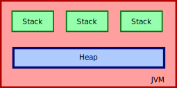
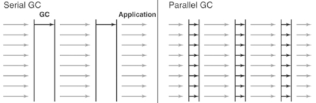

JVM/GC Überischt und Konfiguration für Solr
Geschichte der JVM
- abstract computing machine
- specification, implementation, and instance
- entwickelt für Java, aber andere Sprachen möglich
Existierende Sprachen
A JVM language is any language with functionality that can be expressed in terms of a valid class file. [Wikipedia]
- Scala, a statically-typed object-oriented and functional programming language
- JRuby, an implementation of Ruby
- Jython, an implementation of Python
- Nashorn, an implementation of Javascript
- ...
JVM Spezifikation
- 32-bit
- hybrid mit einem Stack and register–register oder load/store Ansatz
- Datentypen
- class loader
Existierende JVM Implementierungen
Es existieren über 40 verschiedene JVM Projekte.
Existierende Distributionen
- JRE = JVM + Standardklassen + OS spezifische Klassen/Schnittstellen
- JDK = JRE + Compiler + Debugger + Profiler
- OracleJDK
- OpenJDK
- IcedTea
Garbage Collection Motivation
- Einfachheit
- Sicherheit
- Performance
Probleme in der Praxis
Eigentlich keine, aber...
- finalize
- stop the world pauses
=>Abwägung zwischen Durchsatz und Latenz
Warum so wichtig?
Kurz gesagt: Amdahls Law

Bild von Oracle.com
Memory Structure: Heap und Stack
Memory Structure: weak generational hypothesis
Bild von DZone
Bild von DZone
HotSpot Collectors
- vor Java5 serialGC
- seit Java5 Standard parallelGC
- seit Java5 ergonomics
- seit Java6 cmsGC
- seit Java7 G1GC
- seit Java9 Standard G1GC
Serial/Parallel GC

Bild von cubrid.org
CMS GC
Bild von cubrid.org
G1 GC

Bild von oracle.com
Other Collectors
- OpenJ9
- Azul (pauseless)
- Shenandoah (zukünftig)
Solr Configuration
Von einem aktuellen Solr 7.1
# Establish default GC logging opts if no env var set (otherwise init to sensible default)
if [ -z ${GC_LOG_OPTS+x} ]; then
if [[ "$JAVA_VER_NUM" < "9" ]] ; then
GC_LOG_OPTS=('-verbose:gc' '-XX:+PrintHeapAtGC' '-XX:+PrintGCDetails' \
'-XX:+PrintGCDateStamps' '-XX:+PrintGCTimeStamps' '-XX:+PrintTenuringDistribution' \
'-XX:+PrintGCApplicationStoppedTime')
else
GC_LOG_OPTS=('-Xlog:gc*')
fi
else
GC_LOG_OPTS=($GC_LOG_OPTS)
fi
# if verbose gc logging enabled, setup the location of the log file and rotation
if [ "$GC_LOG_OPTS" != "" ]; then
if [[ "$JAVA_VER_NUM" < "9" ]] ; then
gc_log_flag="-Xloggc"
if [ "$JAVA_VENDOR" == "IBM J9" ]; then
gc_log_flag="-Xverbosegclog"
fi
GC_LOG_OPTS+=("$gc_log_flag:$SOLR_LOGS_DIR/solr_gc.log" '-XX:+UseGCLogFileRotation' '-XX:NumberOfGCLogFiles=9' '-XX:GCLogFileSize=20M')
else
# http://openjdk.java.net/jeps/158
for i in "${!GC_LOG_OPTS[@]}";
do
# for simplicity, we only look at the prefix '-Xlog:gc'
# (if 'all' or multiple tags are used starting with anything other then 'gc' the user is on their own)
# if a single additional ':' exists in param, then there is already an explicit output specifier
GC_LOG_OPTS[$i]=$(echo ${GC_LOG_OPTS[$i]} | sed "s|^\(-Xlog:gc[^:]*$\)|\1:file=$SOLR_LOGS_DIR/solr_gc.log:time,uptime:filecount=9,filesize=20000|")
done
fi
fi
JAVA_MEM_OPTS=()
if [ -z "$SOLR_HEAP" ] && [ -n "$SOLR_JAVA_MEM" ]; then
JAVA_MEM_OPTS=($SOLR_JAVA_MEM)
else
SOLR_HEAP="${SOLR_HEAP:-512m}"
JAVA_MEM_OPTS=("-Xms$SOLR_HEAP" "-Xmx$SOLR_HEAP")
fi
# Pick default for Java thread stack size, and then add to SOLR_OPTS
if [ -z ${SOLR_JAVA_STACK_SIZE+x} ]; then
SOLR_JAVA_STACK_SIZE='-Xss256k'
fi
SOLR_OPTS+=($SOLR_JAVA_STACK_SIZE)
# define default GC_TUNE
if [ -z ${GC_TUNE+x} ]; then
GC_TUNE=('-XX:NewRatio=3' \
'-XX:SurvivorRatio=4' \
'-XX:TargetSurvivorRatio=90' \
'-XX:MaxTenuringThreshold=8' \
'-XX:+UseConcMarkSweepGC' \
'-XX:+UseParNewGC' \
'-XX:ConcGCThreads=4' '-XX:ParallelGCThreads=4' \
'-XX:+CMSScavengeBeforeRemark' \
'-XX:PretenureSizeThreshold=64m' \
'-XX:+UseCMSInitiatingOccupancyOnly' \
'-XX:CMSInitiatingOccupancyFraction=50' \
'-XX:CMSMaxAbortablePrecleanTime=6000' \
'-XX:+CMSParallelRemarkEnabled' \
'-XX:+ParallelRefProcEnabled' \
'-XX:-OmitStackTraceInFastThrow')
else
GC_TUNE=($GC_TUNE)
fi
HotSpot Java
GC
- -XX:+UseConcMarkSweepGC
- -XX:+UseParNewGC
Memory organisation
- -XX:NewRatio=3
- -XX:SurvivorRatio=4
- -XX:TargetSurvivorRatio=90
- -XX:MaxTenuringThreshold=8
- -XX:PretenureSizeThreshold=64m
Parallel tuning
- -XX:ConcGCThreads=4
- -XX:ParallelGCThreads=4
- -XX:+UseCMSInitiatingOccupancyOnly -XX:CMSInitiatingOccupancyFraction=50
- -XX:+CMSParallelRemarkEnabled
- -XX:+ParallelRefProcEnabled
Sonstiges
- -XX:CMSMaxAbortablePrecleanTime=6000
- -XX:-OmitStackTraceInFastThrow
- -XX:+CMSScavengeBeforeRemark
Empfehlung
CMS
- gut konfiguriert
- tuning Heap organisation
G1
- für Heaps größer 6GB
- maximale Latenz
- wenig getestet
G1
JVM_OPTS=" \
-XX:+UseG1GC \
-XX:+ParallelRefProcEnabled \
-XX:G1HeapRegionSize=8m \
-XX:MaxGCPauseMillis=200 \
-XX:+UseLargePages \
-XX:+AggressiveOpts \
"
Quelle: Solr Wiki
Zukunft: Analyse
- Crash
- Hänger
- Out of memory
- Performance
- Alternative GCs
- Fusion default config
Danke!
Referenzen
- https://en.wikipedia.org/wiki/Java_virtual_machine
- https://en.wikipedia.org/wiki/Virtual_machine
- https://en.wikipedia.org/wiki/List_of_Java_virtual_machines
- https://en.wikipedia.org/wiki/HotSpot
- https://en.wikipedia.org/wiki/OpenJ9
- https://en.wikipedia.org/wiki/Comparison_of_Java_virtual_machines
- https://en.wikipedia.org/wiki/List_of_JVM_languages
- https://www.azul.com/resources/azul-technology/azul-c4-garbage-collector/
- http://www.oracle.com/webfolder/technetwork/tutorials/obe/java/gc01/index.html
- https://www.onlinedigitallearning.com/mod/lesson/view.php?navbutton=Next+activity%3A+Identifying+a+sluggish+JVM&id=15475
- https://dzone.com/articles/java-8-permgen-metaspace
- http://www.oracle.com/technetwork/java/javase/tech/vmoptions-jsp-140102.html
- https://dzone.com/articles/java-8-permgen-metaspace
- http://tutorials.jenkov.com/java-concurrency/java-memory-model.html
- https://dzone.com/articles/java-memory-architecture-model-garbage-collection
- https://docs.oracle.com/javase/1.5.0/docs/guide/vm/gc-ergonomics.html
- https://www.cubrid.org/blog/understanding-java-garbage-collection
- https://docs.oracle.com/javase/8/docs/technotes/guides/vm/gctuning/ergonomics.html
- https://docs.oracle.com/javase/9/gctuning/ergonomics.htm
- https://docs.oracle.com/javase/8/docs/technotes/guides/vm/gctuning/cms.html
- https://docs.oracle.com/javase/8/docs/technotes/guides/vm/gctuning/sizing.html
- https://wiki.apache.org/solr/ShawnHeisey
- https://blogs.oracle.com/poonam/understanding-cms-gc-logs
- https://blogs.oracle.com/jonthecollector/what-the-hecks-a-concurrent-mode
- https://docs.oracle.com/javase/specs/jvms/se8/html/index.html